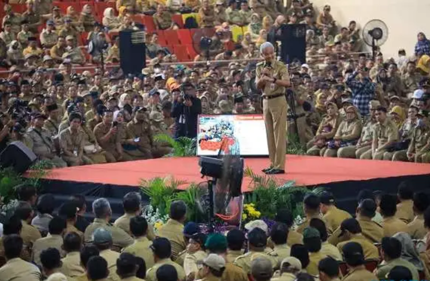

Ikut Sarasehan di Semarang, Ratusan Kades Wonogiri Dapat PR Ini dari Ganjar
Ratusan kades dan perangkat desa di Wonogiri mendapatkan PR untuk menyelesaikan sejumlah permasalahan seusai
mengikuti sarasehan bersama Gubernur Jateng Ganjar Pranowo.

Solopos.com, WONOGIRI — Sebanyak 400 kepala desa atau kades dan perangkat desa di
Wonogiri mengikuti sarasehan
bersama Gubernur Jawa Tengah Ganjar Pranowo di GOR Jatidiri, Semarang, Senin (5/6/2023). Sepulang dari acara
itu,
para kepala desa mendapatkan pekerjaan rumah atau PR untuk menurunkan angka stunting dan kemiskinan di desa
masing-masing.
Kepala Bidang Pemerintahan Desa Dinas Pemberdayaan Masyarakat dan Desa (PMD) Wonogiri,
Zyqma Idatya Fitha,
mengatakan ada 400 kepala desa/perangkat desa yang mengikuti sarasehan kepala desa se-Jawa Tengah dengan tema
“Gotong Royong Membangun Kemandirian” di Semarang.
Mereka berangkat berombongan sesuai wilayah kecamatan masing-masing. Fitha menerangkan
pada sarasehan itu Gubernur Ganjar
menekankan para kepala desa agar menurunkan angka stunting dan kemiskinan ekstrem di wilayah masing-masing.
Kepala dan perangkat desa dinilai menjadi ujung tombak untuk menekan stunting dan
kemiskinan karena langsung menghadapi warga.
“Waktu akhir sarasehan lebih ditekankan agar desa ini bisa mengentaskan kemiskinan dan stunting,” kata Fitha
saat ditemui
Solopos.com, Selasa (6/6/2023).